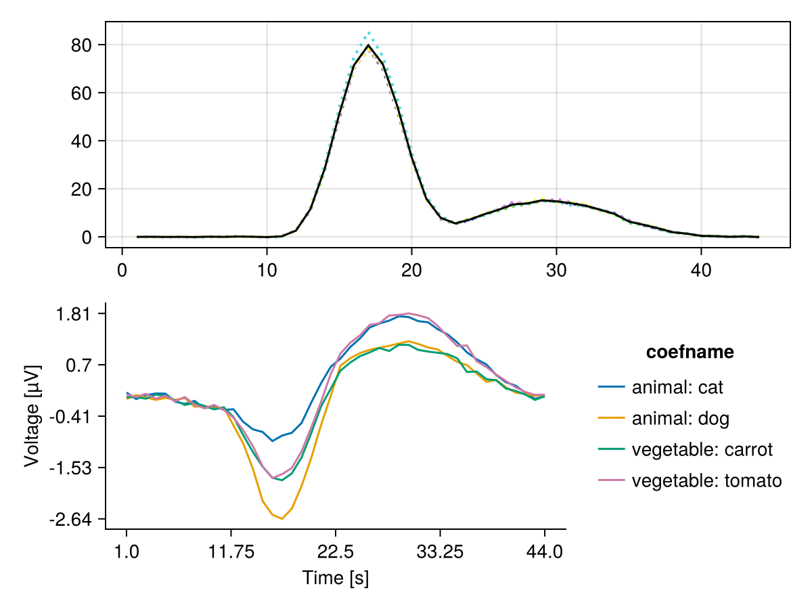
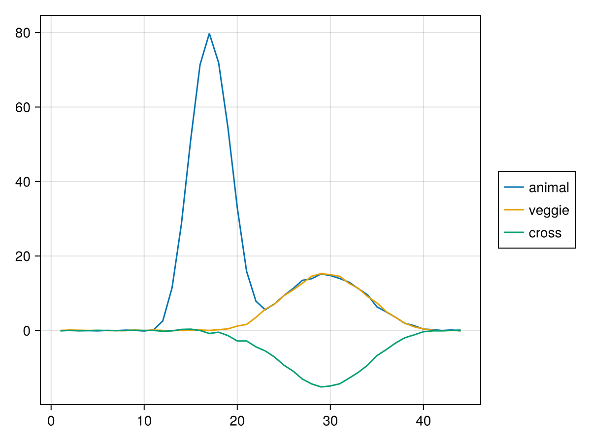
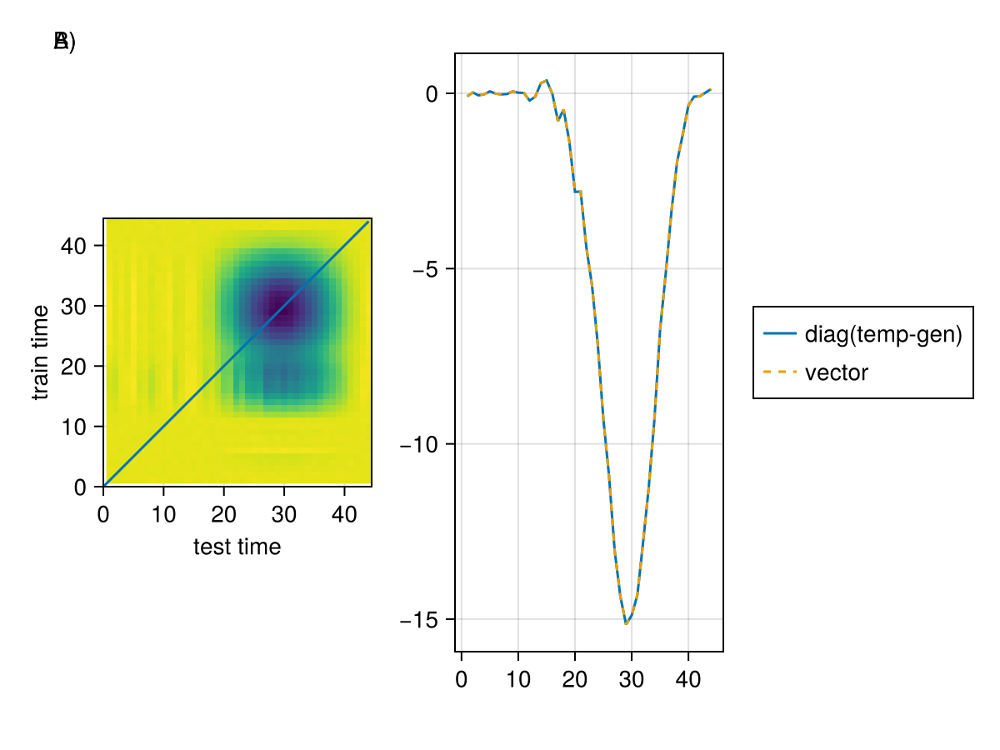

Cross-validated MANOVA (cvMANOVA)
This tutorial demonstrates how to perform cross-validated MANOVA on a two-level factor.
Setup
using Unfold
using UnfoldSim
using UnfoldStats
using StatsModels
using Random
using Statistics
using CairoMakie
using UnfoldMakie
using DataFramesSet seed for reproducible cross-validation folds.
Random.seed!(42)Generate two-class EEG data
Generate simulated multichannel EEG data with two conditions (classes).
sfreq = 100
p1 = (p100(; sfreq = sfreq), @formula(0 ~ 1), [5], Dict())
n1 = (n170(; sfreq = sfreq), @formula(0 ~ 1 + animal), [5, 3], Dict())
p3 = (p300(; sfreq = sfreq), @formula(0 ~ 1 + animal + vegetable), [5, -1, 1], Dict())
design =
SingleSubjectDesign(;
conditions = Dict(:animal => ["dog", "cat"], :vegetable => ["tomato", "carrot"]),
event_order_function = shuffle,
) |> x -> RepeatDesign(x, 100)
eeg, evts = UnfoldSim.predef_eeg(
MersenneTwister(1),
design,
LinearModelComponent,
[p1, n1, p3];
sfreq,
return_epoched = true,
multichannel = true,
noiselevel = 1.0,
)
fake_times = 1:size(eeg, 2)Please cite: HArtMuT: Harmening Nils, Klug Marius, Gramann Klaus and Miklody Daniel - 10.1088/1741-2552/aca8ceCheck the event structure with condition variable
first(evts, 5)| Row | animal | vegetable | latency |
|---|---|---|---|
| String | String | Int64 | |
| 1 | dog | carrot | 62 |
| 2 | cat | tomato | 132 |
| 3 | cat | carrot | 196 |
| 4 | dog | tomato | 249 |
| 5 | cat | carrot | 303 |
Fit an Unfold-Model
For cvMANOVA we need a overspecified designmatrix. Thus instead of using an intercept, we have one column for each level of any categorical predictor we want to use.
f = @formula 0 ~ 0 + animal + vegetable
contrasts = Dict(
:animal => StatsModels.FullDummyCoding(),
:vegetable => StatsModels.FullDummyCoding(),
)
m = fit(UnfoldModel, f, evts, eeg, fake_times; contrasts = contrasts, fit = false)As you can see, we have a binary designmatrix now. This is later important to define the contrasts.
modelmatrix(m)[1][1:5, :]5×4 Matrix{Float64}:
0.0 1.0 1.0 0.0
1.0 0.0 0.0 1.0
1.0 0.0 1.0 0.0
0.0 1.0 0.0 1.0
1.0 0.0 1.0 0.0Fit with k-fold cross-validation
We use the cross-validation solver, and importantly, we directly fit the test-set Β estimates as well
cv_solver = Unfold.solver_cv(n_folds = 5, shuffle = true, fit_test = true)
fit!(m, eeg; solver = cv_solver) # note: we could have run the fit(...;solver=...) directlyRun cvMANOVA
Define a two-level contrast to compare the two classes: [-1, 1] This means: (class 2) - (class 1)
C = [-1, 1, 0, 0]4-element Vector{Int64}:
-1
1
0
0We use only the "baseline" period (first 10 time samples) to estimate a noise covariance.
Y_baseline = eeg[:, 1:10, :]Compute cvMANOVA's D for each timepoint
D_per_fold = cvMANOVA(m, Y_baseline; C = C)5-element Vector{Vector{Float64}}:
[-0.0597945885453818, -0.014189918947870438, -0.06357789560378521, 0.022015591774258745, -0.13787801240500433, 0.1509894313234023, 0.025554415377431156, 0.03686917148904638, 0.025446485928354752, -0.10259697861834055 … 6.860155217272793, 4.729990647360415, 3.2011163765917368, 1.8952443672122663, 1.2378585058354745, 0.5164073028520081, 0.3153602289764925, 0.05076526302757962, 0.15632061458105492, -0.14176230669314172]
[-0.009237159143159455, 0.0062979351747368606, -0.11425323048302981, -0.0869751304257352, 0.01532765222493132, 0.05677863506862408, -0.12226825070839714, 0.1585546916172808, 0.027691201001144663, -0.14002394428854303 … 6.678745556901533, 5.008496548071618, 3.591237935650617, 2.1035583621924485, 1.154814539666507, 0.42858324878233384, 0.05457476217896396, -0.06317739500603911, 0.010914640812832681, -0.09970328090580129]
[-0.017222301507592803, 0.11910317499724417, -0.10103164853625264, -0.05520639047167965, -0.24988998665473314, -0.09958263173161924, -0.06225288024093135, 0.019571077282755783, 0.011962551189350565, -0.17342774144517253 … 6.101716432714728, 5.196667990248518, 3.74419452579268, 2.023419444908067, 1.4012608077711979, 0.30645241004070745, 0.1596569102320569, -0.0471768783901823, 0.1805954040851836, -0.21999749943587296]
[-0.05846050310423367, -0.13647337235761875, -0.02093314183456736, -0.04873035017894932, -0.07271046247512392, -0.08057772123901619, 0.07866569006555056, 0.22334193939203714, -0.032450360634612374, -0.07784728152914268 … 5.784563315202376, 4.844422137871447, 3.2302524181441497, 1.6935137764788186, 1.3320749576628899, 0.2540124838275757, 0.25606477527318205, 0.030532916453181375, 0.19106147966295925, -0.07796434794191906]
[-0.04040282930080026, -0.0008896971516439836, 0.0011417894957722482, 0.014079558221798393, -0.056611486875493125, 0.12657930983501361, -0.0857180030085403, 0.044583982723312696, 0.08317043219765993, -0.13817097963345562 … 6.390349655062362, 5.208883625744558, 3.982694249214518, 1.9412310392581096, 1.3412487896272023, 0.3444453741694635, 0.4154293220456794, 0.0004934096990531707, 0.17738631077262149, 0.028712072497361445]Aggregate the discriminability statistic across all CV folds.
D_mean = mean(D_per_fold)This is the time-resolved discriminability: higher values = better discrimination
let
f, ax, h = series(reduce(hcat, D_per_fold)', linestyle = :dot)
lines!(ax, D_mean, color = :black)
plot_erp!(f[2, 1], subset(coeftable(m), :channel => (x -> x .== 10)))
f
end
Cross Decoding
Next we will check how well we can decode animal based on vegetable, and vice versa
C_animal = [-1, 1, 0, 0]
C_veggie = [0, 0, -1, 1]
D_animal = mean(cvMANOVA(m, Y_baseline; C = C_animal))
D_veggie = mean(cvMANOVA(m, Y_baseline; C = C_veggie))
D_cross = mean(cvMANOVA(m, Y_baseline; C = C_animal, C_test = C_veggie))
let
f = Figure()
ax = Axis(f[1, 1])
h_a = lines!(ax, D_animal, label = "animal")
h_v = lines!(ax, D_veggie, label = "veggie")
h_c = lines!(ax, D_cross, label = "cross")
Legend(f[1, 2], ax)
f
end
Cross decoding is only possible where veggie and animal share some representation, e.g. at the "p300" time window, but not at the "n170" time window, which was simulated specific to animals.
# Time Generalization
import LinearAlgebra: diag
D_temporal = mean(
cvMANOVA(
m,
Y_baseline;
C = C_animal,
C_test = C_veggie,
temporal_generalization = true,
),
)
let
f, ax, h = heatmap(
D_temporal,
axis = (; aspect = DataAspect(), xlabel = "test time", ylabel = "train time"),
colormap = :viridis,
)
lines!(ax, [0, size(D_temporal, 1)], [0, size(D_temporal, 2)]) # diag
lines(f[1, 2], diag(D_temporal), label = "diag(temp-gen)")
lines!(D_cross, linestyle = :dash, label = "vector")
Legend(f[1, 3], current_axis())
Label(f[1, 1, TopLeft()], "A)")
Label(f[1, 1, TopLeft()], "B)")
f
end
A) shows the temporal generalization matrix, where the x-axis is the test time and the y-axis is the training time. Here one can see, besides the diagonal cross-decoding, that training at sample ~15 allows decoding at sample 30 B) The diagonal of this matrix is equivalent to the "normal" way as discussed before
This page was generated using Literate.jl.